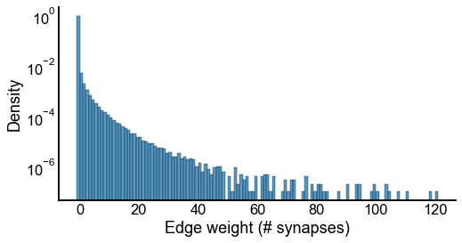

Simple summary statistics¶
¶
import os
import matplotlib.pyplot as plt
import numpy as np
import pandas as pd
import seaborn as sns
from mpl_toolkits.axes_grid1 import make_axes_locatable
from src.data import load_metagraph
from src.graph import MetaGraph, preprocess
from src.hierarchy import signal_flow
from src.io import readcsv, savecsv, savefig
from src.visualization import (
CLASS_COLOR_DICT,
adjplot,
barplot_text,
get_mid_map,
gridmap,
matrixplot,
remove_axis,
remove_shared_ax,
remove_spines,
set_axes_equal,
set_style,
stacked_barplot,
)
from scipy.stats import pearsonr, spearmanr
from pkg.data import load_data
from pkg.plot import set_theme
set_theme()
data = load_data("G")
adj = data.adj
meta = data.meta
g = data.graph
print(len(g))
3079
n_nodes = len(meta)
n_edges = (adj != 0).sum()
n_synapse_pairs = int(adj.sum())
print(f"Number of nodes: {n_nodes}")
print(f"Number of edges: {n_edges}")
print(f"Number of synaptic pairings: {n_synapse_pairs}")
Number of nodes: 3079
Number of edges: 106551
Number of synaptic pairings: 338131
nbunch = meta.index.values
meta["out_degree_unweighted"] = meta.index.map(dict(g.out_degree(nbunch, weight=None)))
meta["in_degree_unweighted"] = meta.index.map(dict(g.in_degree(nbunch, weight=None)))
meta["out_degree_weighted"] = meta.index.map(
dict(g.out_degree(nbunch, weight="weight"))
)
meta["in_degree_weighted"] = meta.index.map(dict(g.in_degree(nbunch, weight="weight")))
degrees = meta[
[
"out_degree_unweighted",
"in_degree_unweighted",
"out_degree_weighted",
"in_degree_weighted",
]
]
inds = np.nonzero(adj)
weights = adj.ravel().copy() # [inds]
fig, ax = plt.subplots(1, 1, figsize=(8, 4))
bins = np.linspace(-1, weights.max(), int(weights.max() + 2)) + 0.01
sns.histplot(weights, ax=ax, log_scale=False, kde=False, bins=bins, stat="density")
ax.set_ylabel("Density")
ax.set_xlabel("Edge weight (# synapses)")
ax.set_yscale("log")

¶
log_scale = False
distplot_kws = dict(kde=False)
ylabel = "Weighted out degree"
xlabel = "Weighted in degree"
fig, ax = plt.subplots(1, 1, figsize=(8, 8))
median_degrees = np.median(degrees, axis=0)
median_in_degree = median_degrees[0]
median_out_degree = median_degrees[1]
n_bins_log = 50
n_bins_linear = 300
if log_scale:
degrees[degrees == 0] += 0.5
ax.set_yscale("log")
ax.set_xscale("log")
bins = np.geomspace(degrees.min().min(), degrees.max().max(), n_bins_log)
else:
start = -1 / (n_bins_linear - 1) * degrees.max().max()
bins = np.linspace(start, degrees.max().max(), n_bins_linear)
sns.scatterplot(
data=degrees,
x="in_degree_weighted",
y="out_degree_weighted",
s=5,
alpha=0.4,
linewidth=0,
ax=ax,
)
ax.scatter(
median_in_degree, median_out_degree, s=200, marker="+", color="black", linewidth=2
)
ax.set_ylabel(ylabel)
ax.set_xlabel(xlabel)
divider = make_axes_locatable(ax)
top_ax = divider.append_axes("top", size="20%", sharex=ax)
sns.histplot(x=degrees["in_degree_weighted"], ax=top_ax, bins=bins, **distplot_kws)
top_ax.xaxis.set_visible(False)
top_ax.yaxis.set_visible(False)
right_ax = divider.append_axes("right", size="20%", sharey=ax)
sns.histplot(
y=degrees["out_degree_weighted"],
ax=right_ax,
bins=bins,
**distplot_kws,
)
right_ax.yaxis.set_visible(False)
right_ax.xaxis.set_visible(False)
ax.axis("square")
pearsons, _ = pearsonr(degrees["in_degree_weighted"], degrees["out_degree_weighted"])
spearmans, _ = spearmanr(degrees["in_degree_weighted"], degrees["out_degree_weighted"])
ax.text(
0.7,
0.05,
f"Pearson's: {pearsons:0.3f}\nSpearman's: {spearmans:0.3f}",
transform=ax.transAxes,
fontsize=12,
)
if not log_scale:
ax.set_xlim((-20, 500))
ax.set_ylim((-20, 500))
<ipython-input-6-6df5acaac1e9>:40: MatplotlibDeprecationWarning:
In a future version, 'pad' will default to rcParams['figure.subplot.hspace']. Set pad=0 to keep the old behavior.
<ipython-input-6-6df5acaac1e9>:45: MatplotlibDeprecationWarning:
In a future version, 'pad' will default to rcParams['figure.subplot.wspace']. Set pad=0 to keep the old behavior.